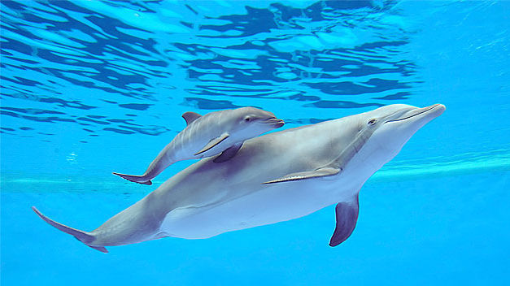
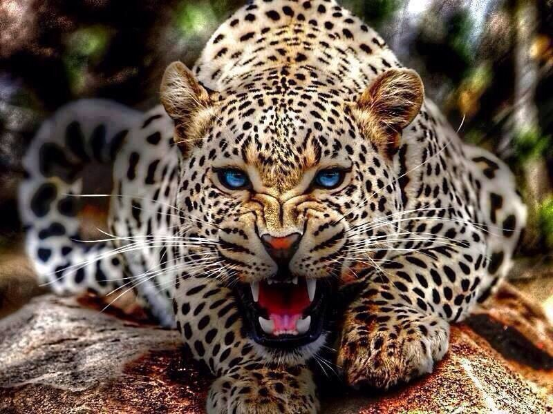
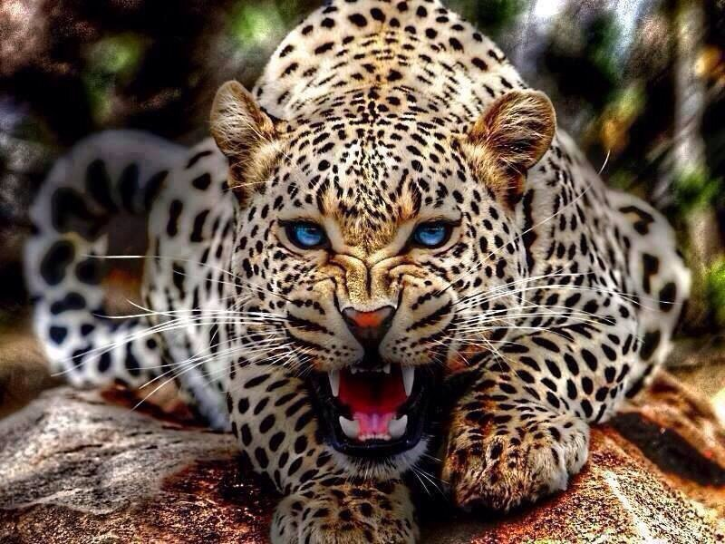
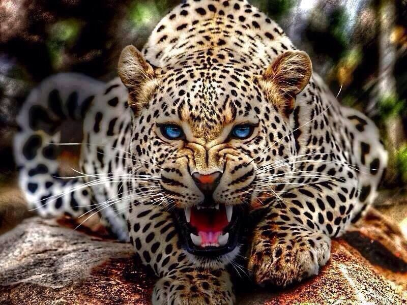

BACK
Imagenes_animales
Animales:
animales terrestres & acuaticos

 


¿Su nombre?
- Adán.
- ¿Y el de su mujer?
- Eva.
- Increíble, ¿la serpiente vive aquí también?
- Si un momento. ¡¡SUEGRAA!!, la buscan...❀
- No, tienes una nariz común.
- ¿Ah, sí?
- Sí, ¡común tucán!❀
- Claro. ¿Pero quién saca a mi amiga?
- Ahhh, por eso no te preocupes. ¡SEGURIDAAAAD!❀
- Vale cariño, pues yo te llamaré dálmata por ser el 101.❀
3-.❀¿Bailamos?
4-❀.Amor, de ahora en adelante te llamaré Eva por ser mi primera mujer.
Animaciones.com